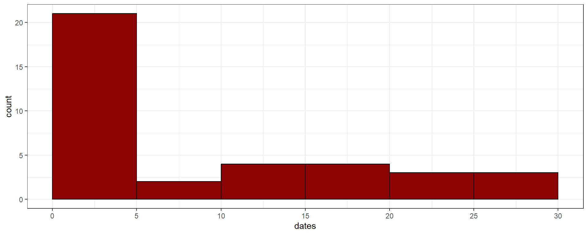
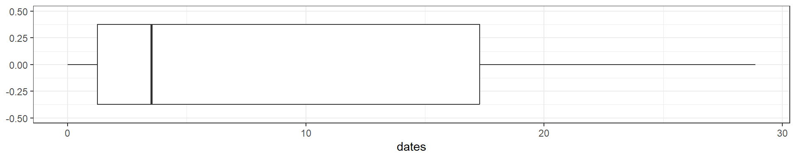

library(tidyverse)
birds_caribbean <- tibble("dates"=c(0.00,0.00,0.04,0.21,0.29,
0.54,0.63,0.88,0.96,1.25,1.67,1.75,1.84,1.96,2.01,
2.51,2.72,3.30,3.51,4.05,4.85,6.94,8.73,10.57,11.11,
12.45,14.00,17.30,17.92,18.05,18.43,22.48,22.48,23.48,26.32,
26.45,28.87))경영통계분석 HW1, R code
20249132 김형환
2. Discrete data
a. Plot the data in a histogram and describe the shape of the frequency distribution.
ggplot(data=birds_caribbean, aes(x=dates))+
geom_histogram(binwidth=5, boundary=0, color="black",fill="darkred")+
scale_x_continuous(breaks = seq(0,30,5)) +
theme_bw()
c. Calculate the mean and median. Was your intuition in part (b) correct?
birds_caribbean %>%
summarise(mean=mean(dates), mid=median(dates))# A tibble: 1 × 2
mean mid
<dbl> <dbl>
1 8.66 3.51d. Calculate the first and third quantiles and the inter quartile range.
birds_caribbean %>% reframe(quantile=quantile(dates))# A tibble: 5 × 1
quantile
<dbl>
1 0
2 1.25
3 3.51
4 17.3
5 28.9 e. Draw a box plot for these data
ggplot(birds_caribbean, aes(x=dates))+
geom_boxplot()+
scale_y_continuous(limits=c(-0.5,0.5))+
theme_bw()
4. Sample Statistics
handheight <- tibble("person"=c("A","B","C","D","E"),
"hand"=c(17,15,19,17,21),
"height"=c(150,154,169,172,175))
handheight# A tibble: 5 × 3
person hand height
<chr> <dbl> <dbl>
1 A 17 150
2 B 15 154
3 C 19 169
4 D 17 172
5 E 21 175a. Calculate the sample variances for hand and height, respectively.
sample_var <- handheight %>%
mutate(hand_tmp=hand-mean(handheight$hand),
height_tmp=height-mean(handheight$height)) %>%
mutate(hand_tmp=hand_tmp^2, height_tmp=height_tmp^2) %>%
summarise(s_var_hand=sum(hand_tmp)/4, s_var_height=sum(height_tmp)/4)
sample_var# A tibble: 1 × 2
s_var_hand s_var_height
<dbl> <dbl>
1 5.2 126.b. Calculate the sample covariance.
sample_cov <- handheight %>%
mutate(s_cov_tmp=(hand-mean(handheight$hand))*(height-mean(handheight$height))) %>%
summarise(s_cov=sum(s_cov_tmp)/4)
sample_cov# A tibble: 1 × 1
s_cov
<dbl>
1 18.5c. Calculate the sample correlation and interpret the result.
sample_corr=sample_cov$s_cov/sqrt(sample_var$s_var_hand*sample_var$s_var_height)
sample_corr[1] 0.7213147
R 내장함수 활용 가능
var(handheight$hand)[1] 5.2var(handheight$height)[1] 126.5cov(handheight$hand,handheight$height)[1] 18.5cor(handheight$hand,handheight$height)[1] 0.7213147